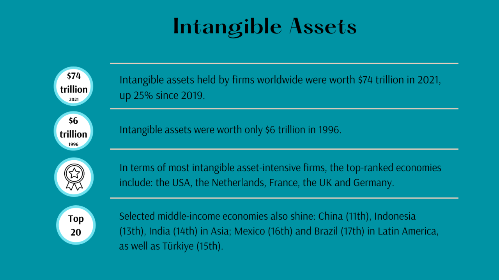
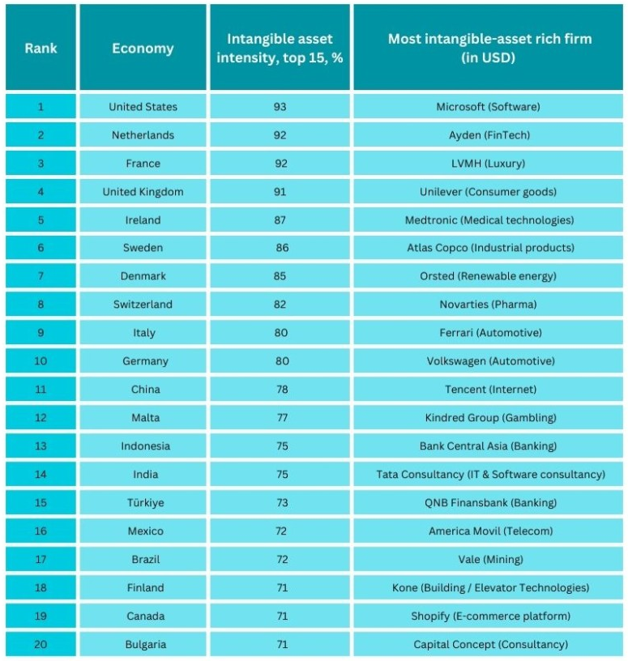

Intangible assets owned by all listed companies grew to $74 trillion in 2021
Lessons learned from WIPO's Global Innovation Index 2022
By Annie Brown, Jack Gregory and Sacha Wunsch-Vincent in Innovation WIPO
November 11, 2022

Concurrent with the digital revolution, intangible assets—such as R&D, intellectual property, brands, software, databases, organizational assets and skills—have grown in importance. They are now the cornerstone of any vibrant innovation ecosystem. As such, intangible assets should be part of any measure gauging the success of corporate and national innovation ecosystems.
The Global Innovation Index (GII) 2022 includes novel data quantifying corporate intangible assets worldwide. This comes in support of a broader effort at the World Intellectual Property Organization (WIPO) to better understand and value intangible assets—see, for example, the recent High-Level Conversation on Intangible Asset Finance of WIPO’s IP and Innovation Ecosystems Sector.
Since many of these assets are not publicly disclosed, their value is hard to quantify. In collaboration with Brand Finance, we have utilized the Global Intangible Finance Tracker (GIFT) to identify the top global 5,000 firms in terms of their ownership of intangible assets. In each GII economy, we then construct an intangible asset intensity indicator measuring the value of intangible assets compared to total enterprise value of the top 15 firms per economy for which data are available.
Based on data of Brand Finance and our novel indicator approach, we find that:
- Global intangible assets held by firms worldwide are worth $USD 74 trillion in 2021, growing by more than 25% since 2019, and up from an estimated $USD 6 trillion in 1996.
- In terms of most intangible asset-intensive firms, the top-ranked economies tend to be high-income economies, including: the United States (US), the Netherlands, France, the United Kingdom (UK), and Germany.
- In the US, for example, the ratio of intangible assets to enterprise value for the top 15 firms is 93%—i.e. almost covering the full enterprise value.
- Among the top 20 economies, intensities range from 93% in the top-performing US, to 80% in Germany (10th), to 71% in economies like Canada (19th).
- Select middle-income economies also shine with respect to intangible asset intensity. For instance, China (11th), Indonesia (13th), India (14th) in Asia; Mexico (16th) and Brazil (17th) in Latin America, as well as Türkiye (15th) and Bulgaria (20th) perform well too and rank within the top 20 economies.

The most intangible asset-rich firms per country (in absolute US dollars) are from a diverse set of sectors—see the last column in above table.
- For the US, the software company Microsoft is the leader. Generally, the ICT sector is intangible-asset rich with Tencent in China, Tata Consultancy in India, America Movil in Mexico and the ecommerce platform Shopify in Canada.
- In France, it is the luxury goods conglomerate LVMH which performs best.
- Banks make a strong showing in Indonesia, and Türkiye, while the FinTech firm Ayden is top in the Netherlands.
- Finally, the automotive sector is also intangible-asset-rich in certain countries, with Ferrari leading in Italy and Volkswagen in Germany.
In future years, our plan is to expand this partnership between WIPO and Brand Finance to continue to bring meaningful insights into intangible asset magnitudes and impacts. We believe these data help innovation policy-makers and stakeholders to better make sense of innovation ecosystems which are increasingly influenced what by non-physical and difficult-to-measure assets.
Stay tuned for the release of novel GIFT Data, which is being released here on November 15th, 2022.
You can view individual GII economy profiles here, and see for example France or India.
This is a republished blog post, where the original is available here. Details regarding my co-authors are available on LinkedIn, please see: Annie Brown (Brand Finance) and Sacha Wunsch-Vincent (WIPO). Finally, more information on the GII 2022 is available at its webpage.
- Posted on:
- November 11, 2022
- Length:
- 3 minute read, 592 words
- Categories:
- Innovation WIPO
- Tags:
- GII
- See Also: